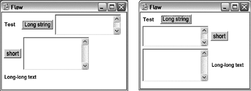
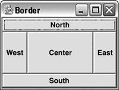
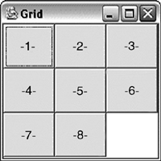

Менеджеры компоновки
При размещении компонент в контейнере поначалу всегда кажется удобным задавать их размер и положение явно с помощью метода setBounds.
Однако дальше становятся очевидны недостатки такого подхода. Например, удобно предоставить пользователю возможность изменять размер фрейма, а это означает необходимость перестраивать компоненты. Развитие приложения также может привести к добавлению или удалению компонента, после чего придется пересчитывать координаты оставшихся элементов.
Есть проблемы и другого характера. Мы указывали, что JVM выбирает шрифты из имеющихся в системе. Поэтому под разными платформами они могут оказаться разного размера или наклона. В результате приложение, красиво смотрящееся на машине разработчика, может "поплыть" у клиента. Даже под одной платформой пользователь может сменить системные настройки, вследствие чего внешний вид приложения может измениться не в лучшую сторону.
Все эти соображения наводят на мысль, что было бы полезно каким-то образом автоматизировать расположение компонентов. Именно для этой цели служат менеджеры компоновки. Их задача – вычислить и установить размер и местоположение компонентов в контейнере. Вообще говоря, они могут использовать следующий набор параметров для своих вычислений:
- размер контейнера;
- начальное положение и размер компонента;
- его порядковый номер в наборе компонентов;
- специальный параметр-ограничитель (constraint), который может быть установлен при добавлении компонента.
В AWT каждый контейнер обладает менеджером компоновки. Если он равен null, то используются явные параметры компонентов. Настоящие же классы менеджеров должны реализовывать интерфейс LayoutManager. Этот интерфейс принимает в качестве constraints строку (String). Со временем это было признано недостаточно гибким (фирмы стали разрабатывать и предлагать свои менеджеры, обладающие самой разной функциональностью). Поэтому был добавлен новый интерфейс – LayoutManager2, принимающий в качестве ограничителя constraints.
Рассмотрим работу нескольких наиболее распространенных менеджеров компоновки. Но перед этим отметим общий для них всех факт. Дело в том, что не всегда вся область контейнера подходит для размещения в ней компонент. Например, фрейм имеет рамку и полосу заголовка. В результате его полезная площадь меньше. Поэтому все менеджеры компоновки начинают с обращения к методу getInsets класса Container. Этот метод возвращает значение типа Insets. Это класс, который имеет четыре открытых поля – top, right, bottom, left, значения которых описывают отступы со всех четырех сторон, которые необходимо сделать, чтобы получить область, доступную для расположения компонент.
Класс FlowLayout
Этот менеджер является стандартным для Panel. Он не меняет размер компонент, а только располагает их один за другим в линию, как буквы в строке. Когда заканчивается первая "строка", он переходит на следующую, и так далее, пока либо не закончится область контейнера, либо не будут расположены все компоненты.
В качестве параметров конструктору можно передать значение выравнивания по горизонтали (определены константы LEFT, RIGHT, CENTER – значение по умолчанию), а также величину необходимых отступов между компонентами по вертикали (vgap) и горизонтали (hgap). Их значение по умолчанию – 5 пикселов.
Рассмотрим пример:
final Frame f = new Frame("Flaw");
f.setSize(400, 300);
f.setLayout(new FlowLayout(FlowLayout.LEFT));
f.add(new Label("Test"));
f.add(new Button("Long string"));
f.add(new TextArea(2, 20));
f.add(new Button("short"));
f.add(new TextArea(4, 20));
f.add(new Label("Long-long text"));
f.setVisible(true);
Если теперь менять размер этого фрейма, то можно видеть, как перераспределяются компоненты:

Рис.
Класс BorderLayout
Этот менеджер является стандартным для контейнера Window и его наследников Frame и Dialog.
BorderLayout использует ограничитель. При добавлении компонента необходимо указать одну из 5 констант, определенных в этом классе: NORTH, SOUTH, EAST, WEST, CENTER (используется по умолчанию). Первыми располагаются северный и южный компонент. Их высота не изменяется, а ширина становится равной ширине контейнера. Северный компонент помещается на самый верх контейнера, южный – вниз. Затем располагаются восточный и западный компоненты. Их ширина не меняется, а высота становится равной высоте контейнера за вычетом места, которое заняли первые две компоненты. Наконец, все оставшееся место занимает центральная компонента.
Рассмотрим пример:
final Frame f = new Frame("Border");
f.setSize(200, 150);
f.add(new Button("North"),
BorderLayout.NORTH);
f.add(new Button("South"),
BorderLayout.SOUTH);
f.add(new Button("West"),
BorderLayout.WEST);
f.add(new Button("East"),
BorderLayout.EAST);
f.add(new Button("Center"),
BorderLayout.CENTER);
f.setVisible(true);
Вот как выглядит такой фрейм:

Рис.
И в этом менеджере есть параметры hgap и vgap (по умолчанию их значение равно нулю).
Класс GridLayout
Этот менеджер поступает следующим образом – он разделяет весь контейнер на одинаковые прямоугольные сектора (отсюда и его название – решетка). Далее последовательно каждый компонент полностью занимает свой сектор (таким образом, они все становятся одинакового размера).
В конструкторе указывается количество строк и столбцов для разбиения:
final Frame f = new Frame("Grid");
f.setSize(200, 200);
f.setLayout(new GridLayout(3, 3));
for (int i=0; i<8; i++) {
f.add(new Button("-"+(i+1)+"-"));
}
f.setVisible(true);
Вот как выглядит такой фрейм:

Рис.
И в этом менеджере есть параметры hgap и vgap (по умолчанию их значение равно нулю).
Класс CardLayout
Этот менеджер ведет себя подобно колоде карт. В один момент виден лишь один компонент, и он занимает всю область контейнера. Программист может управлять тем, какой именно компонент показывается пользователю.
Заключение
Библиотека AWT имеет множество классов и внутренних механизмов. Новые версии Java добавляют новые возможности и пересматривают старые. Тем не менее, основные концепции были подробно рассмотрены в этой лекции и на их основе можно построить полнофункциональный графический интерфейс пользователя (GUI).
Стандартные компоненты AWT иерархически упорядочены в дерево наследования с классом Component в вершине. Важным его наследником является класс Container, который может хранить набор компонентов. Прямые наследники Component составляют набор управляющих элементов ("контролов", от англ. controls), а наследники Container – набор контейнеров для группировки и расположения компонентов. Для упрощения размещения отдельных элементов пользовательского интерфейса применяются менеджеры компоновки (Layout managers).
Особое место в AWT занимает процедура отрисовки компонентов, которая может инициироваться как операционной системой, так и программой. Специальные классы служат для задания таких атрибутов, как цвет, шрифт и т.д.
Один из наследников Container – класс Window, который представляет собой самостоятельное окно в многооконной операционной системе. Два его наследника – Dialog и Frame. Для работы с файлами определен наследник Dialog – FileDialog.
Наконец, излагаются принципы модели событий от пользователя, позволяющей обрабатывать все действия, которые производит клиент, работая с программой. 11 событий и соответствующих им интерфейсов предоставляют все необходимое для написания полноценной GUI-программы.
Апплеты – небольшие программы, предназначенные для работы в браузерах как небольшие части HTML-страниц. Класс java.applet.Applet является наследником Panel, а потому обладает всеми свойствами AWT-компонент. Были представлены этапы жизненного цикла апплета, отличного от цикла обычного приложения, которое запускается методом main. Для размещения апплета на HTML-странице необходимо использовать специальный тег <applet>. Кроме этого, можно указывать специальные параметры, чтобы апплет настраивался без перекомпиляции кода.
|